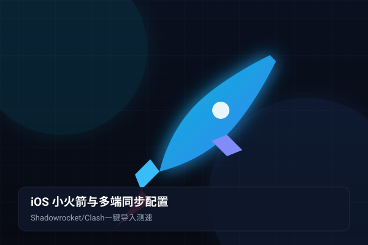

1. iOS 平台科学上网利器：Shadowrocket 核心优势
对于广大的苹果 iPhone 与 iPad 用户而言，由于 iOS 系统生态的沙盒限制与审核机制，无法直接安装第三方的开源 APK 软件。而在苹果 App Store 中，常年雄霸工具榜榜首、被广大科学上网玩家亲切称为“小火箭”的 Shadowrocket，无疑是移动端综合体验最好、协议兼容性最强、电量消耗最低的代理神器。
Shadowrocket 支持 Shadowsocks、Trojan、Vmess、Vless-Reality 等几乎所有主流翻墙出海协议，能够完美兼容 wgetcloud官网 生成的通用订阅与 Clash 订阅规则，并具备深度集成 iOS 系统“VPN 与网络拓展”的无感后台常驻能力。
2. 正版小火箭下载与海外 Apple ID 准备指南
需要特别注意：Shadowrocket 在中国大陆地区的 App Store 是无法搜寻并下载的，必须借助海外地区（如美区、日区、港区）的 Apple ID：
3. wgetcloud 订阅节点导入小火箭（扫码与唤醒）
在 iPhone 上完成 Shadowrocket 下载后，将 wgetcloud 的高速专线节点导入客户端极为快捷：
- 使用手机自带 Safari 浏览器访问 wgetcloud官网用户中心 并登录。
- 在控制面板中找到“便捷导入”，点击
一键导入到 Shadowrocket。系统将自动弹出“在 Shadowrocket 中打开此链接？”，点击“打开”。 - 客户端将自动弹起，并一键完成服务器节点列表的下载与解密，数十条包含香港、日本、新加坡、美国的极速专线节点瞬间就绪。
- 备用扫码导入法：如果你是在电脑上打开 wgetcloud 后台，只需在手机小火箭首页点击左上角的“扫码”图标，直接对准电脑屏幕上的订阅二维码轻轻一扫，配置同样立即可用。
4. 分流设置实战：配置 (Config) 模式详解
在 Shadowrocket 主界面正中央，有一项非常核心的设置——全局路由 (Global Routing)。点击进入后会看到四个选项，请务必选择 配置 (Config) 模式：
- 配置 (Config / 强烈推荐)：智能分流规则。小火箭会依据内置的 ACL 分流规则，自动判断目标网站。国内网站走 Direct 直连，国外被墙网站走 Proxy 专线，完全不影响微信后台消息推送与国内外卖、打车软件定位。
- 代理 (Proxy)：强制全局代理。所有流量不论国内外一律走代理，极度耗费套餐流量，且可能导致国内银行或微信弹安全风控，平时切勿开启。
- 直连 (Direct)：直接关闭所有节点的代理功能，等同于使用本地裸网。
5. 订阅自动更新与一键节点测速优化
为了保障节点的持续高可用，建议开启小火箭的“后台自动同步”：
在小火箭底部点击 设置 (Settings) -> 订阅 (Subscribe)，勾选 打开时更新 与 自动后台更新。如此一来，每当你点开小火箭，它都会在后台自动拉取 wgetcloud 最新的健康节点与动态 IP。
在首页服务器列表处，点击“连通性测试 (Ping Test)”，软件会向测试服务器发送 ICMP/TCP 握手包，几秒内以不同颜色标出各个节点的真实延迟。选择绿色低延迟节点（如“香港 01 IPLC”），点击顶部总开关开启即可畅游国际互联网！
6. 手机、电脑、平板全设备多端同步心法
现代出海用户的设备通常不仅有一台手机，还包括 Windows 办公电脑、MacBook 笔记本或 iPad 平板。wgetcloud 提供统一的多终端通用订阅链接机制：
只需在用户中心复制一次订阅源 URL，便可分别在电脑的 Clash Verge / Clash Party、手机的小火箭、平板的 Loon 以及 Android 上的 Clash Meta 中无缝复用。所有的套餐流量消耗合并计算，支持多设备同时并发高速在线，为你构筑无死角的全球全场景高速数字出海生活。
体验专线极速体验 - 告别卡顿与断连
wgetcloud 提供真正的 IPLC 内网专线与多平台 Clash / Clash Party 智能客户端，晚高峰 4K 视频秒开无压力。
关于本篇主题的常见疑难问题（FAQ）
针对上述教程与实际配置过程中高频出现的网络、规则、测速与订阅问题，我们为您整理了以下专业解答：
这是 iOS 系统的安全授权提示。小火箭需要使用系统网络底层接口创建本地虚拟代理通道，点击“允许”并输入手机锁屏密码即可顺利完成激活。
完全不会。Shadowrocket 专门针对 iOS 内核进行了深度节能优化，日常在后台静默待机的耗电量甚至低于微信或音乐播放软件，全天常驻也不会对手机续航造成明显负担。
连通性测试（Ping）只能证明本地与节点入口之间的网络连通性。如果打不开网页，请检查手机系统时间是否精准同步，或者全局路由是否误设为了“直连 (Direct)”。
在小火箭设置中找到“代理共享 (Proxy Share)”，开启“启用共享”，系统会显示本地局域网 IP 与端口号。在电脑或 Switch 的 Wi-Fi 代理设置中填入该 IP 与端口，即可共享手机的翻墙加速效果。